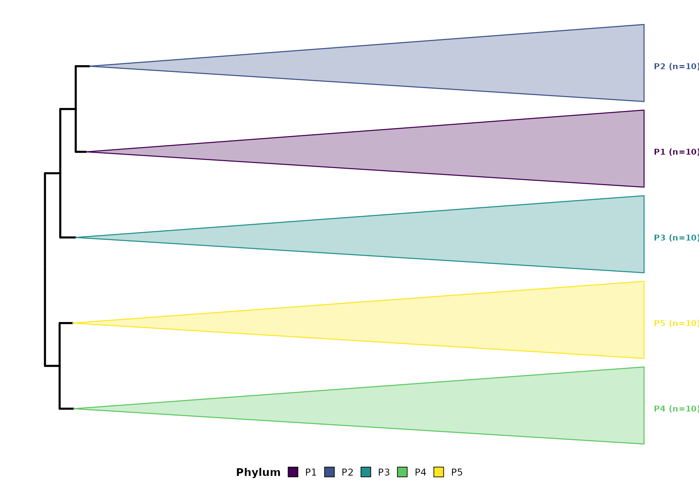

Color-Blind Friendly Palettes
Rclade defaults to the viridis palette, which is: -
Color-blind friendly - Grayscale friendly - Perceptually uniform
library(Rclade)
data(example_tree)
# Default viridis palette
p <- plot_timetree(example_tree, rank = "phylum",
taxonomy_format = "GTDB",
add_timescale = FALSE)
#>
#> ============================================================
#> Rclade: Phylogenetic Tree Visualization
#> ============================================================
#> 2026-09-07T08:19:22.001+00:00 | INFO | Starting plot_timetree pipeline
#> 2026-09-07T08:19:22.002+00:00 | INFO | Tree input : phylo object
#> 2026-09-07T08:19:22.002+00:00 | INFO | Rank : phylum
#> 2026-09-07T08:19:22.002+00:00 | INFO | Layout : rectangular
#> 2026-09-07T08:19:22.003+00:00 | INFO | Unit : auto
#> 2026-09-07T08:19:22.004+00:00 | INFO | Step 1/7: Input validation and reading
#>
#> --------------------------------------------------
#> >> Input Validation
#> --------------------------------------------------
#> 2026-09-07T08:19:22.006+00:00 | INFO | Tips : 50
#> 2026-09-07T08:19:22.006+00:00 | INFO | Internal nodes : 49
#> 2026-09-07T08:19:22.006+00:00 | INFO | Edge lengths range : 40.1579 to 2758.4006
#> 2026-09-07T08:19:22.007+00:00 | INFO | Input validation passed
#> 2026-09-07T08:19:22.016+00:00 | INFO | Timer 'input_reading': 12 ms
#> 2026-09-07T08:19:22.017+00:00 | INFO | Step 2/7: Taxonomy parsing
#> 2026-09-07T08:19:22.017+00:00 | INFO | Using rank-based taxonomy: phylum
#> 2026-09-07T08:19:22.025+00:00 | INFO | Detected format : GTDB
#> 2026-09-07T08:19:22.025+00:00 | INFO | Groups found : 5
#> 2026-09-07T08:19:22.026+00:00 | INFO | Timer 'taxonomy_parsing': 8 ms
#> 2026-09-07T08:19:22.026+00:00 | INFO | Step 3/7: MRCA computation and monophyly check
#> 2026-09-07T08:19:22.026+00:00 | INFO | Checking monophyly and computing MRCA for each group...
#> 2026-09-07T08:19:22.030+00:00 | INFO | Valid groups for collapse: 5 out of 5 total groups
#> 2026-09-07T08:19:22.030+00:00 | INFO | Valid MRCA nodes : 5
#> 2026-09-07T08:19:22.031+00:00 | INFO | Timer 'mrca_computation': 5 ms
#> 2026-09-07T08:19:22.837+00:00 | INFO | Step 4/7: Color generation
#> 2026-09-07T08:19:22.844+00:00 | INFO | Color palette : viridis
#> 2026-09-07T08:19:22.845+00:00 | INFO | Step 5/7: Tree rendering
#> ! # Invaild edge matrix for <phylo>. A <tbl_df> is returned.
#> ! # Invaild edge matrix for <phylo>. A <tbl_df> is returned.
#> 2026-09-07T08:19:23.056+00:00 | INFO | Collapsing 5 clades...
#> 2026-09-07T08:19:23.086+00:00 | INFO | Clade collapse complete
#> 2026-09-07T08:19:23.086+00:00 | INFO | Timer 'tree_rendering': 241 ms
#> 2026-09-07T08:19:23.087+00:00 | INFO | Step 6/7: Timescale integration
#>
#> ============================================================
#> Pipeline Complete
#> ============================================================
#> 2026-09-07T08:19:23.178+00:00 | INFO | Tips : 50
#> 2026-09-07T08:19:23.178+00:00 | INFO | Groups parsed : 5
#> 2026-09-07T08:19:23.179+00:00 | INFO | Groups collapsed : 5
#> 2026-09-07T08:19:23.179+00:00 | INFO | Singleton groups : 0
#> 2026-09-07T08:19:23.180+00:00 | INFO | Skipped (non-monophyletic) : 0
#> 2026-09-07T08:19:23.180+00:00 | INFO | Skipped (root/zero-tip) : 0
#> 2026-09-07T08:19:23.180+00:00 | INFO | Taxonomy format : GTDB
#> 2026-09-07T08:19:23.181+00:00 | INFO | Layout : rectangular
#> 2026-09-07T08:19:23.181+00:00 | INFO | Timescale : disabled
#> 2026-09-07T08:19:23.181+00:00 | INFO | plot_timetree completed successfully
print(p)
Custom Color Mapping
# Custom color mapping for specific groups
p <- plot_timetree(example_tree, rank = "phylum",
taxonomy_format = "GTDB",
add_timescale = FALSE,
color_mapping = c("Proteobacteria" = "#E41A1C",
"Firmicutes" = "#377EB8"))
#>
#> ============================================================
#> Rclade: Phylogenetic Tree Visualization
#> ============================================================
#> 2026-09-07T08:19:23.766+00:00 | INFO | Starting plot_timetree pipeline
#> 2026-09-07T08:19:23.767+00:00 | INFO | Tree input : phylo object
#> 2026-09-07T08:19:23.767+00:00 | INFO | Rank : phylum
#> 2026-09-07T08:19:23.767+00:00 | INFO | Layout : rectangular
#> 2026-09-07T08:19:23.768+00:00 | INFO | Unit : auto
#> 2026-09-07T08:19:23.768+00:00 | INFO | Step 1/7: Input validation and reading
#>
#> --------------------------------------------------
#> >> Input Validation
#> --------------------------------------------------
#> 2026-09-07T08:19:23.769+00:00 | INFO | Tips : 50
#> 2026-09-07T08:19:23.769+00:00 | INFO | Internal nodes : 49
#> 2026-09-07T08:19:23.770+00:00 | INFO | Edge lengths range : 40.1579 to 2758.4006
#> 2026-09-07T08:19:23.771+00:00 | INFO | Input validation passed
#> 2026-09-07T08:19:23.771+00:00 | INFO | Timer 'input_reading': 3 ms
#> 2026-09-07T08:19:23.771+00:00 | INFO | Step 2/7: Taxonomy parsing
#> 2026-09-07T08:19:23.772+00:00 | INFO | Using rank-based taxonomy: phylum
#> 2026-09-07T08:19:23.779+00:00 | INFO | Detected format : GTDB
#> 2026-09-07T08:19:23.779+00:00 | INFO | Groups found : 5
#> 2026-09-07T08:19:23.780+00:00 | INFO | Timer 'taxonomy_parsing': 8 ms
#> 2026-09-07T08:19:23.780+00:00 | INFO | Step 3/7: MRCA computation and monophyly check
#> 2026-09-07T08:19:23.780+00:00 | INFO | Checking monophyly and computing MRCA for each group...
#> 2026-09-07T08:19:23.783+00:00 | INFO | Valid groups for collapse: 5 out of 5 total groups
#> 2026-09-07T08:19:23.783+00:00 | INFO | Valid MRCA nodes : 5
#> 2026-09-07T08:19:23.784+00:00 | INFO | Timer 'mrca_computation': 3 ms
#> 2026-09-07T08:19:23.784+00:00 | INFO | Step 4/7: Color generation
#> 2026-09-07T08:19:23.786+00:00 | INFO | Color palette : viridis
#> 2026-09-07T08:19:23.786+00:00 | INFO | Step 5/7: Tree rendering
#> ! # Invaild edge matrix for <phylo>. A <tbl_df> is returned.
#> ! # Invaild edge matrix for <phylo>. A <tbl_df> is returned.
#> 2026-09-07T08:19:23.901+00:00 | INFO | Collapsing 5 clades...
#> 2026-09-07T08:19:23.929+00:00 | INFO | Clade collapse complete
#> 2026-09-07T08:19:23.930+00:00 | INFO | Timer 'tree_rendering': 143 ms
#> 2026-09-07T08:19:23.930+00:00 | INFO | Step 6/7: Timescale integration
#>
#> ============================================================
#> Pipeline Complete
#> ============================================================
#> 2026-09-07T08:19:24.007+00:00 | INFO | Tips : 50
#> 2026-09-07T08:19:24.007+00:00 | INFO | Groups parsed : 5
#> 2026-09-07T08:19:24.008+00:00 | INFO | Groups collapsed : 5
#> 2026-09-07T08:19:24.008+00:00 | INFO | Singleton groups : 0
#> 2026-09-07T08:19:24.008+00:00 | INFO | Skipped (non-monophyletic) : 0
#> 2026-09-07T08:19:24.008+00:00 | INFO | Skipped (root/zero-tip) : 0
#> 2026-09-07T08:19:24.009+00:00 | INFO | Taxonomy format : GTDB
#> 2026-09-07T08:19:24.009+00:00 | INFO | Layout : rectangular
#> 2026-09-07T08:19:24.009+00:00 | INFO | Timescale : disabled
#> 2026-09-07T08:19:24.010+00:00 | INFO | plot_timetree completed successfully
print(p)Legend Placement
# Inside the plot (default)
p <- plot_timetree(example_tree, rank = "phylum",
taxonomy_format = "GTDB",
add_timescale = FALSE,
legend_position = c(0.05, 0.85))
#>
#> ============================================================
#> Rclade: Phylogenetic Tree Visualization
#> ============================================================
#> 2026-09-07T08:19:24.592+00:00 | INFO | Starting plot_timetree pipeline
#> 2026-09-07T08:19:24.593+00:00 | INFO | Tree input : phylo object
#> 2026-09-07T08:19:24.593+00:00 | INFO | Rank : phylum
#> 2026-09-07T08:19:24.593+00:00 | INFO | Layout : rectangular
#> 2026-09-07T08:19:24.594+00:00 | INFO | Unit : auto
#> 2026-09-07T08:19:24.594+00:00 | INFO | Step 1/7: Input validation and reading
#>
#> --------------------------------------------------
#> >> Input Validation
#> --------------------------------------------------
#> 2026-09-07T08:19:24.595+00:00 | INFO | Tips : 50
#> 2026-09-07T08:19:24.595+00:00 | INFO | Internal nodes : 49
#> 2026-09-07T08:19:24.596+00:00 | INFO | Edge lengths range : 40.1579 to 2758.4006
#> 2026-09-07T08:19:24.597+00:00 | INFO | Input validation passed
#> 2026-09-07T08:19:24.597+00:00 | INFO | Timer 'input_reading': 3 ms
#> 2026-09-07T08:19:24.597+00:00 | INFO | Step 2/7: Taxonomy parsing
#> 2026-09-07T08:19:24.598+00:00 | INFO | Using rank-based taxonomy: phylum
#> 2026-09-07T08:19:24.605+00:00 | INFO | Detected format : GTDB
#> 2026-09-07T08:19:24.606+00:00 | INFO | Groups found : 5
#> 2026-09-07T08:19:24.606+00:00 | INFO | Timer 'taxonomy_parsing': 8 ms
#> 2026-09-07T08:19:24.606+00:00 | INFO | Step 3/7: MRCA computation and monophyly check
#> 2026-09-07T08:19:24.607+00:00 | INFO | Checking monophyly and computing MRCA for each group...
#> 2026-09-07T08:19:24.615+00:00 | INFO | Valid groups for collapse: 5 out of 5 total groups
#> 2026-09-07T08:19:24.616+00:00 | INFO | Valid MRCA nodes : 5
#> 2026-09-07T08:19:24.616+00:00 | INFO | Timer 'mrca_computation': 9 ms
#> 2026-09-07T08:19:24.617+00:00 | INFO | Step 4/7: Color generation
#> 2026-09-07T08:19:24.618+00:00 | INFO | Color palette : viridis
#> 2026-09-07T08:19:24.619+00:00 | INFO | Step 5/7: Tree rendering
#> ! # Invaild edge matrix for <phylo>. A <tbl_df> is returned.
#> ! # Invaild edge matrix for <phylo>. A <tbl_df> is returned.
#> 2026-09-07T08:19:24.730+00:00 | INFO | Collapsing 5 clades...
#> 2026-09-07T08:19:24.758+00:00 | INFO | Clade collapse complete
#> 2026-09-07T08:19:24.758+00:00 | INFO | Timer 'tree_rendering': 139 ms
#> 2026-09-07T08:19:24.758+00:00 | INFO | Step 6/7: Timescale integration
#>
#> ============================================================
#> Pipeline Complete
#> ============================================================
#> 2026-09-07T08:19:24.840+00:00 | INFO | Tips : 50
#> 2026-09-07T08:19:24.840+00:00 | INFO | Groups parsed : 5
#> 2026-09-07T08:19:24.841+00:00 | INFO | Groups collapsed : 5
#> 2026-09-07T08:19:24.841+00:00 | INFO | Singleton groups : 0
#> 2026-09-07T08:19:24.841+00:00 | INFO | Skipped (non-monophyletic) : 0
#> 2026-09-07T08:19:24.841+00:00 | INFO | Skipped (root/zero-tip) : 0
#> 2026-09-07T08:19:24.842+00:00 | INFO | Taxonomy format : GTDB
#> 2026-09-07T08:19:24.842+00:00 | INFO | Layout : rectangular
#> 2026-09-07T08:19:24.842+00:00 | INFO | Timescale : disabled
#> 2026-09-07T08:19:24.843+00:00 | INFO | plot_timetree completed successfully
# Standard positions
p <- plot_timetree(example_tree, rank = "phylum",
taxonomy_format = "GTDB",
add_timescale = FALSE,
legend_position = "right")
#>
#> ============================================================
#> Rclade: Phylogenetic Tree Visualization
#> ============================================================
#> 2026-09-07T08:19:24.844+00:00 | INFO | Starting plot_timetree pipeline
#> 2026-09-07T08:19:24.844+00:00 | INFO | Tree input : phylo object
#> 2026-09-07T08:19:24.845+00:00 | INFO | Rank : phylum
#> 2026-09-07T08:19:24.845+00:00 | INFO | Layout : rectangular
#> 2026-09-07T08:19:24.845+00:00 | INFO | Unit : auto
#> 2026-09-07T08:19:24.845+00:00 | INFO | Step 1/7: Input validation and reading
#>
#> --------------------------------------------------
#> >> Input Validation
#> --------------------------------------------------
#> 2026-09-07T08:19:24.847+00:00 | INFO | Tips : 50
#> 2026-09-07T08:19:24.847+00:00 | INFO | Internal nodes : 49
#> 2026-09-07T08:19:24.847+00:00 | INFO | Edge lengths range : 40.1579 to 2758.4006
#> 2026-09-07T08:19:24.848+00:00 | INFO | Input validation passed
#> 2026-09-07T08:19:24.849+00:00 | INFO | Timer 'input_reading': 3 ms
#> 2026-09-07T08:19:24.849+00:00 | INFO | Step 2/7: Taxonomy parsing
#> 2026-09-07T08:19:24.849+00:00 | INFO | Using rank-based taxonomy: phylum
#> 2026-09-07T08:19:24.857+00:00 | INFO | Detected format : GTDB
#> 2026-09-07T08:19:24.858+00:00 | INFO | Groups found : 5
#> 2026-09-07T08:19:24.858+00:00 | INFO | Timer 'taxonomy_parsing': 9 ms
#> 2026-09-07T08:19:24.858+00:00 | INFO | Step 3/7: MRCA computation and monophyly check
#> 2026-09-07T08:19:24.859+00:00 | INFO | Checking monophyly and computing MRCA for each group...
#> 2026-09-07T08:19:24.861+00:00 | INFO | Valid groups for collapse: 5 out of 5 total groups
#> 2026-09-07T08:19:24.862+00:00 | INFO | Valid MRCA nodes : 5
#> 2026-09-07T08:19:24.862+00:00 | INFO | Timer 'mrca_computation': 3 ms
#> 2026-09-07T08:19:24.863+00:00 | INFO | Step 4/7: Color generation
#> 2026-09-07T08:19:24.864+00:00 | INFO | Color palette : viridis
#> 2026-09-07T08:19:24.865+00:00 | INFO | Step 5/7: Tree rendering
#> ! # Invaild edge matrix for <phylo>. A <tbl_df> is returned.
#> ! # Invaild edge matrix for <phylo>. A <tbl_df> is returned.
#> 2026-09-07T08:19:24.979+00:00 | INFO | Collapsing 5 clades...
#> 2026-09-07T08:19:25.007+00:00 | INFO | Clade collapse complete
#> 2026-09-07T08:19:25.007+00:00 | INFO | Timer 'tree_rendering': 142 ms
#> 2026-09-07T08:19:25.008+00:00 | INFO | Step 6/7: Timescale integration
#>
#> ============================================================
#> Pipeline Complete
#> ============================================================
#> 2026-09-07T08:19:25.085+00:00 | INFO | Tips : 50
#> 2026-09-07T08:19:25.085+00:00 | INFO | Groups parsed : 5
#> 2026-09-07T08:19:25.086+00:00 | INFO | Groups collapsed : 5
#> 2026-09-07T08:19:25.086+00:00 | INFO | Singleton groups : 0
#> 2026-09-07T08:19:25.086+00:00 | INFO | Skipped (non-monophyletic) : 0
#> 2026-09-07T08:19:25.087+00:00 | INFO | Skipped (root/zero-tip) : 0
#> 2026-09-07T08:19:25.087+00:00 | INFO | Taxonomy format : GTDB
#> 2026-09-07T08:19:25.087+00:00 | INFO | Layout : rectangular
#> 2026-09-07T08:19:25.088+00:00 | INFO | Timescale : disabled
#> 2026-09-07T08:19:25.088+00:00 | INFO | plot_timetree completed successfullyClade Labels
p <- plot_timetree(example_tree, rank = "phylum",
taxonomy_format = "GTDB",
add_timescale = FALSE,
show_clade_label = TRUE)
#>
#> ============================================================
#> Rclade: Phylogenetic Tree Visualization
#> ============================================================
#> 2026-09-07T08:19:25.198+00:00 | INFO | Starting plot_timetree pipeline
#> 2026-09-07T08:19:25.199+00:00 | INFO | Tree input : phylo object
#> 2026-09-07T08:19:25.199+00:00 | INFO | Rank : phylum
#> 2026-09-07T08:19:25.200+00:00 | INFO | Layout : rectangular
#> 2026-09-07T08:19:25.200+00:00 | INFO | Unit : auto
#> 2026-09-07T08:19:25.200+00:00 | INFO | Step 1/7: Input validation and reading
#>
#> --------------------------------------------------
#> >> Input Validation
#> --------------------------------------------------
#> 2026-09-07T08:19:25.201+00:00 | INFO | Tips : 50
#> 2026-09-07T08:19:25.202+00:00 | INFO | Internal nodes : 49
#> 2026-09-07T08:19:25.202+00:00 | INFO | Edge lengths range : 40.1579 to 2758.4006
#> 2026-09-07T08:19:25.203+00:00 | INFO | Input validation passed
#> 2026-09-07T08:19:25.203+00:00 | INFO | Timer 'input_reading': 3 ms
#> 2026-09-07T08:19:25.204+00:00 | INFO | Step 2/7: Taxonomy parsing
#> 2026-09-07T08:19:25.204+00:00 | INFO | Using rank-based taxonomy: phylum
#> 2026-09-07T08:19:25.211+00:00 | INFO | Detected format : GTDB
#> 2026-09-07T08:19:25.212+00:00 | INFO | Groups found : 5
#> 2026-09-07T08:19:25.212+00:00 | INFO | Timer 'taxonomy_parsing': 8 ms
#> 2026-09-07T08:19:25.212+00:00 | INFO | Step 3/7: MRCA computation and monophyly check
#> 2026-09-07T08:19:25.213+00:00 | INFO | Checking monophyly and computing MRCA for each group...
#> 2026-09-07T08:19:25.215+00:00 | INFO | Valid groups for collapse: 5 out of 5 total groups
#> 2026-09-07T08:19:25.216+00:00 | INFO | Valid MRCA nodes : 5
#> 2026-09-07T08:19:25.216+00:00 | INFO | Timer 'mrca_computation': 3 ms
#> 2026-09-07T08:19:25.217+00:00 | INFO | Step 4/7: Color generation
#> 2026-09-07T08:19:25.224+00:00 | INFO | Color palette : viridis
#> 2026-09-07T08:19:25.224+00:00 | INFO | Step 5/7: Tree rendering
#> ! # Invaild edge matrix for <phylo>. A <tbl_df> is returned.
#> ! # Invaild edge matrix for <phylo>. A <tbl_df> is returned.
#> 2026-09-07T08:19:25.333+00:00 | INFO | Collapsing 5 clades...
#> 2026-09-07T08:19:25.361+00:00 | INFO | Clade collapse complete
#> 2026-09-07T08:19:25.361+00:00 | INFO | Timer 'tree_rendering': 137 ms
#> 2026-09-07T08:19:25.362+00:00 | INFO | Step 6/7: Timescale integration
#>
#> ============================================================
#> Pipeline Complete
#> ============================================================
#> 2026-09-07T08:19:25.448+00:00 | INFO | Tips : 50
#> 2026-09-07T08:19:25.449+00:00 | INFO | Groups parsed : 5
#> 2026-09-07T08:19:25.449+00:00 | INFO | Groups collapsed : 5
#> 2026-09-07T08:19:25.449+00:00 | INFO | Singleton groups : 0
#> 2026-09-07T08:19:25.450+00:00 | INFO | Skipped (non-monophyletic) : 0
#> 2026-09-07T08:19:25.450+00:00 | INFO | Skipped (root/zero-tip) : 0
#> 2026-09-07T08:19:25.450+00:00 | INFO | Taxonomy format : GTDB
#> 2026-09-07T08:19:25.451+00:00 | INFO | Layout : rectangular
#> 2026-09-07T08:19:25.451+00:00 | INFO | Timescale : disabled
#> 2026-09-07T08:19:25.451+00:00 | INFO | plot_timetree completed successfully
print(p)
Taxonomy Quality Report
Before finalizing your figure, verify label parsing quality:
summarize_taxonomy_quality(example_tree$tip.label, format = "GTDB")
#> === Taxonomy Label Parsing Quality Report ===
#> Total labels: 50
#> Detected format: GTDB
#>
#> Per-rank parse rates:
#> kingdom 0.0% (0/50)
#> domain 100.0% (50/50) ====================
#> phylum 100.0% (50/50) ====================
#> class 100.0% (50/50) ====================
#> order 0.0% (0/50)
#> family 0.0% (0/50)
#> genus 0.0% (0/50)
#> species 0.0% (0/50)
#> subspecies 0.0% (0/50)
#>
#> All labels parsed successfully.Batch Processing
Process multiple tree files at once:
batch_plot(input_dir = "trees/",
output_dir = "figures/",
pattern = "*.tre",
rank = "phylum",
taxonomy_format = "GTDB")Reproducibility
save_session_info("session_info.txt")References & Acknowledgments
Rclade builds on the ggtree and deeptime R packages. If you use Rclade in published research, please cite Rclade along with these key dependencies:
- Yu G, Smith DK, Zhu H, Guan Y, Lam TT-Y (2017). “ggtree: an R package for visualization and annotation of phylogenetic trees with their covariates and other associated data.” Methods in Ecology and Evolution, 8(1), 28-36. doi:10.1111/2041-210X.12628
- Gearty W (2025). “deeptime: an R package that facilitates highly customizable and reproducible visualizations of data over geological time intervals.” Big Earth Data. doi:10.1080/20964471.2025.2537516
The geological timescale data is based on the ICS International Chronostratigraphic Chart 2023/02 (https://stratigraphy.org/chart/).